上一篇我讲了 Codex App 从 0 到 1 入门，重点是带大家认识 Codex 界面以及进行一些基础配置。
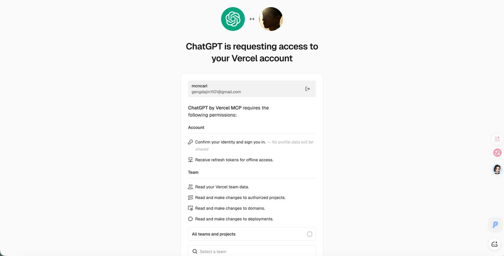
地基已经搭建好了，就要开始用 Codex App 干一些真正能提效降本的事情，把它全方位地赋能到业务里面。
今天这篇就带大家进入一些实战场景，体验一下 Codex 那些不为人知的使用秘诀，从基础到略难，从功能到场景，一次性帮你把 Codex 啃透！🔥
边学边玩，再边把钱赚了，是我的目标，也与各位大佬共勉，话不多说，直接开始！
一、牛马打工人必备：用 Codex 做 Word、PDF、PPT、Sheets 四件套
以前如果你要做一套活动方案、项目汇报、课程交付、咨询报告、员工培训材料，可能要先花几个月熟练使用这些工具。
但是现在在Codex里面只需要一句提示词，就能生成排版精美、数据准确的Word、PDF、PPT、Sheets。
我为了展示Codex生成四件套的能力，做了一个demo：
请在当前对话里做一个办公四件套演示任务，主题是《Codex App 内容生产工作流》。要求： 1. 生成 Word 文档、PDF 文件、PPTX 演示稿、XLSX 表格四类真实文件； 2. 每个文件都要有实际内容，不要空文件； 3. 生成后告诉我每个文件的真实路径； 4. 尽量生成一个预览或文件清单，方便我截图放进教程； 5. 最后给出验收清单，确认四个文件都存在、能打开、不是占位内容。
验收结果： 1.Word 文档验收截图：
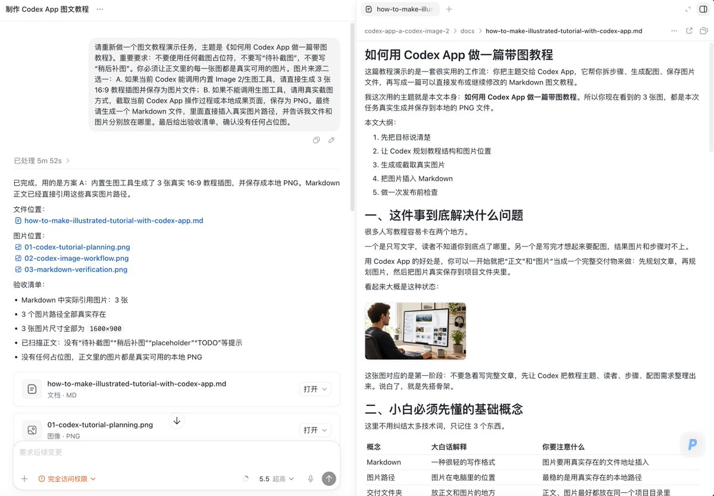
2.PDF 文件验收截图：
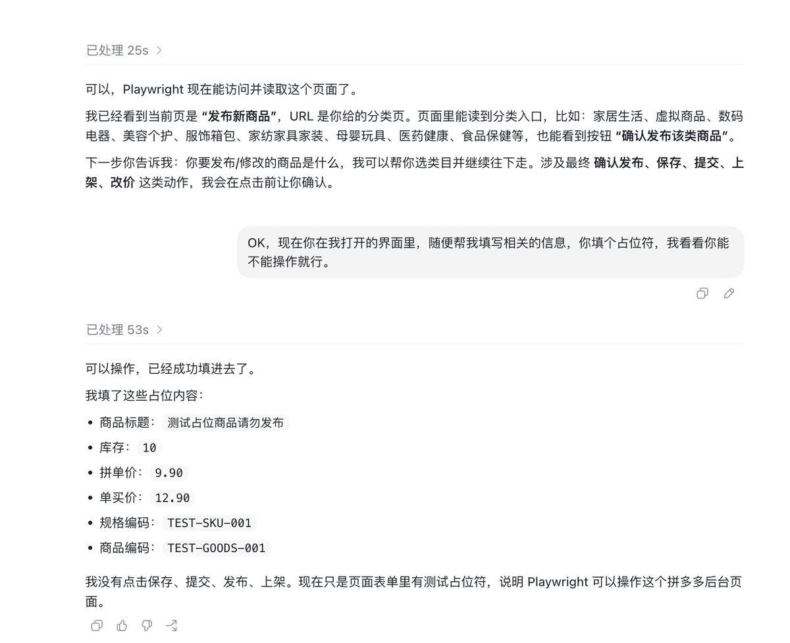
3.PPT 演示稿验收截图：
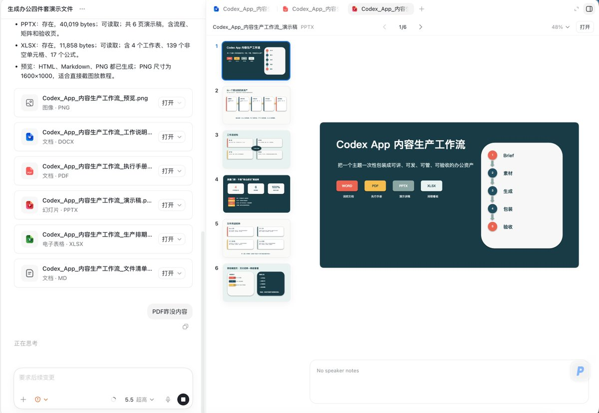
4.Sheets 表格验收截图：
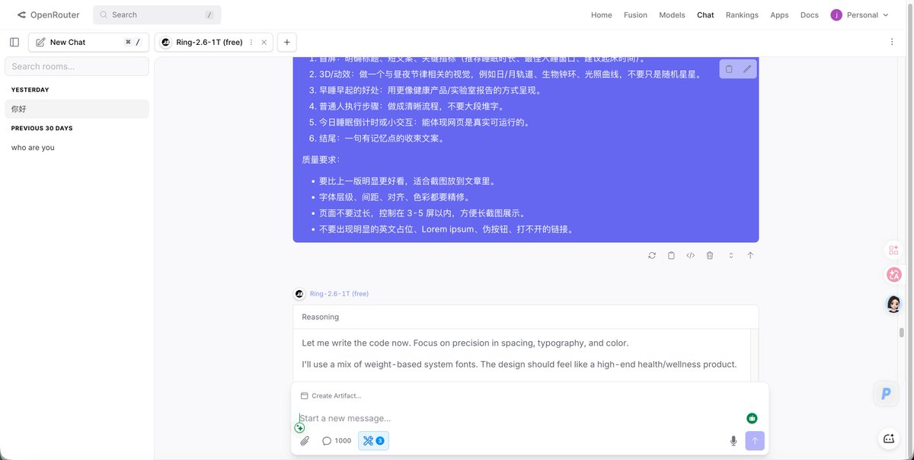
当然，在我没有给出skill或者优化后的提示词的情况下，能做出这样的效果，已经非常优秀了！
众所周知，现在X最火的PPT制作方法，绝对是打破传统的HTML绘制PPT，现在相关爆火的Skill也是数不胜数，其次直接生成图片PPT也是一个另辟蹊径的办法。
下面我将用“进阶版”PPT的操作路径给大家带来一些启发：
路线一：图片型 PPT
图片型 PPT 的意思是：先让 Codex 生成一张张 16:9 的视觉图片，再把这些图片铺到 PPT 里。
每一页 PPT 本质上就是一张完整图片。
效果还是蛮不错的，因为底层是GPT2-imge。
当然，这种方式生成的PPT并非无法编辑，还是有很多方法滴，如果感兴趣，可以私信找我要文档～
路线二：HTML 型 PPT
HTML 型 PPT 是最近非常火的一条路线。
说白了，就是不用传统 PPT 软件，而是用 HTML、CSS、JS 直接写幻灯片。
它的好处是：
X上面有很多开源火爆的Skill，大家用Grok搜索一下就能让Codex安装一下使用了。
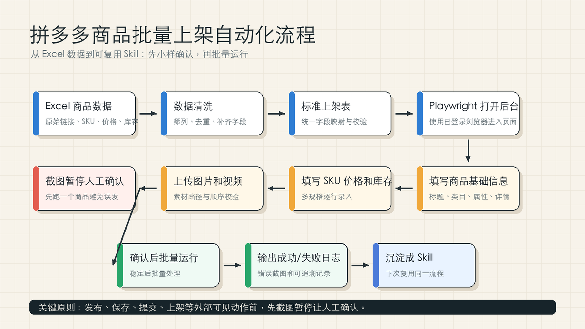
二、手搓酷炫 3D 视频：Codex + HyperFrames / Remotion 做《国产动画十大电影》
前面是打工人刚需，下面开始玩一点酷的，主打一个劳逸结合。
我之前让 Codex + HyperFrames / Remotion (three.js) 做了一个《国产动画十大电影》的 3D 视频：
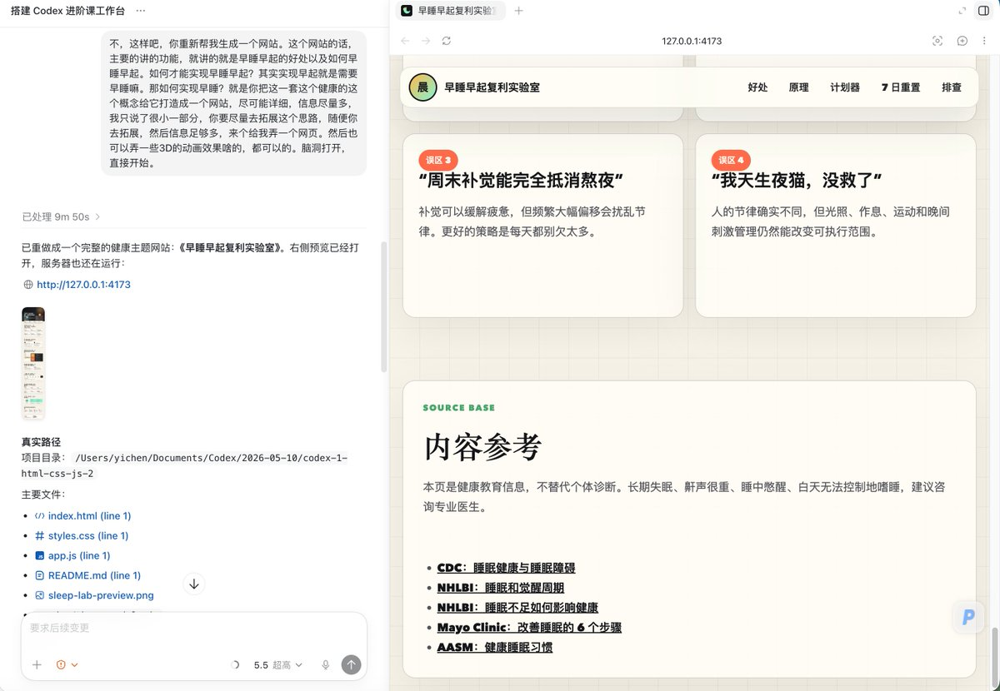
核心思路：
详细步骤就是：
1.先把目标视频的需求给Codex说清楚——“我需要一个做《国产动画十大电影》的视频，16:9....（更多描述参考下面的模板），你自己去网上找素材下载。”
2.和Codex对齐需求——”如果有任何不清楚的地方，或者需要我继续判断的地方，请一定要停下来问我问题，进行信息对齐。“
3.开启“超高”和“完全访问权限”，让Codex@browser和@computer use自己去操作，当然@chrome也可以（但是我一直超时没成功过）。
4.得到成片，然后就是把不满意的地方和Codex说，让它修改。
当初我想要做这么一个视频的思路，很简单，我就是想验证Codex“自动写脚本——搜索素材——自动下载——自动识别高光片段——自动配音——自动剪辑”这条链路跑通。
然后迁移到商业化就是，调用GPT2-image、seedance2.0、elevenlabs等API，90%自动化地完成上述整个思路，赋能到AI流量变现、AI电商带货、AI前端获客、AI广告宣传等真实场景里面。
至于怎么写脚本、怎么生成图片、怎么制作视频，这是一门大学问，需要千锤百炼去苦修试错，不是朝夕就能学会的，而且细分到每一个垂直领域所需要掌握的技巧又是完全不同的。
但是怎么生成一个视频，快速上手玩，有一个通用模板可以给大家快速上手：
目标： 受众： 目标平台：unspecified / YouTube / Shorts / Reels / TikTok / 官网 / 会议现场 时长： 比例 / 分辨率 / FPS： 语言： 场景数量与每场时长： 主体 / 角色： 动作： 场景 / 背景： 镜头 / 构图： 光线 / 色彩 / 风格： 字幕 / 画面文字： 音频：旁白 / 语言 / 音色 / 语速 / 音乐 / SFX 转场： 关键帧 / 参考图 / 角色一致性资产： 品牌 / 法务 / 无障碍： 数据变量 / 占位符： 输出要求：先给 scene list，再给 final prompt，再给 render metadata JSON
关于纯AI视频这一块，我之前这篇推文也有分享过我汇总的影视基础知识：
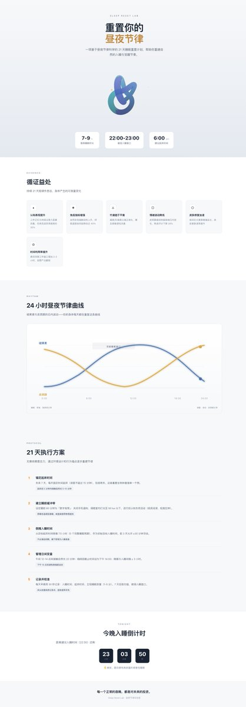
三、早起早睡身体好：一条提示词做网站，并部署到 Vercel
现在玩 AI 的人，很多都有一个共同问题：作息乱。
原因可能就是。。。AI太好玩了——本来只是想改一个提示词，然后顺手又刷了一堆X、莫名其妙调用Codex跑一个任务，最后这个任务又停不下来了。。。这就是曾经的我。。。
我知道用AI很爽，但身体遭不住，健康才是革命的本钱。所以我趁这次写“Codex代码教程“的机会，让 Codex 做了一个网站，主题是“早睡早起身体好”
让Codex写代码，跑出一个小网站或者小App真的很简单：
请重新帮我生成一个网站，主题是早睡早起。 要求： 1. 页面要排版精美； 2. 可以有 3D 动画效果； 3. 分析早睡早起的好处； 4. 给出普通人能执行的步骤； 5. 做成真实可运行的网站； 6. 最后启动本地预览，并部署到 Vercel。
涉及到上线部署（别人通过链接能访问你的这个网站）这里可能需要你配置一下Vercel插件（“插件”里面搜Vercel就行）：
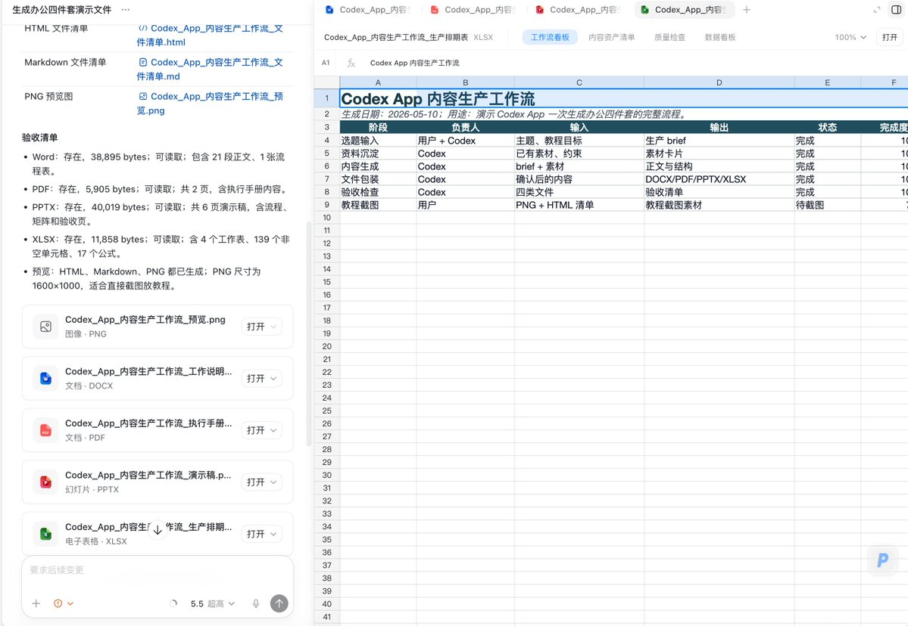
Codex 最后做出来的不只是一个静态页面（已经部署到：https://codex-1-html-css-js-2.vercel.app/，大家可以自由访问），他还做了：
当然，这只是一个很基础的网站，如果想要做前端后端都完备的网站，那么难度会高一些，但是没关系，Codex都能帮你解决的，记得选择“计划模式”，先有方案，再写代码，效果会好很多。
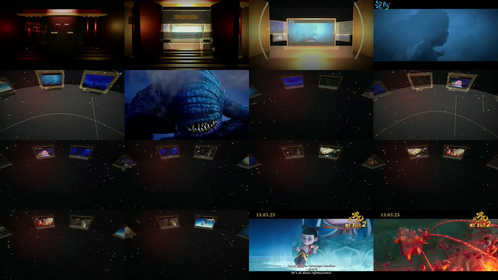
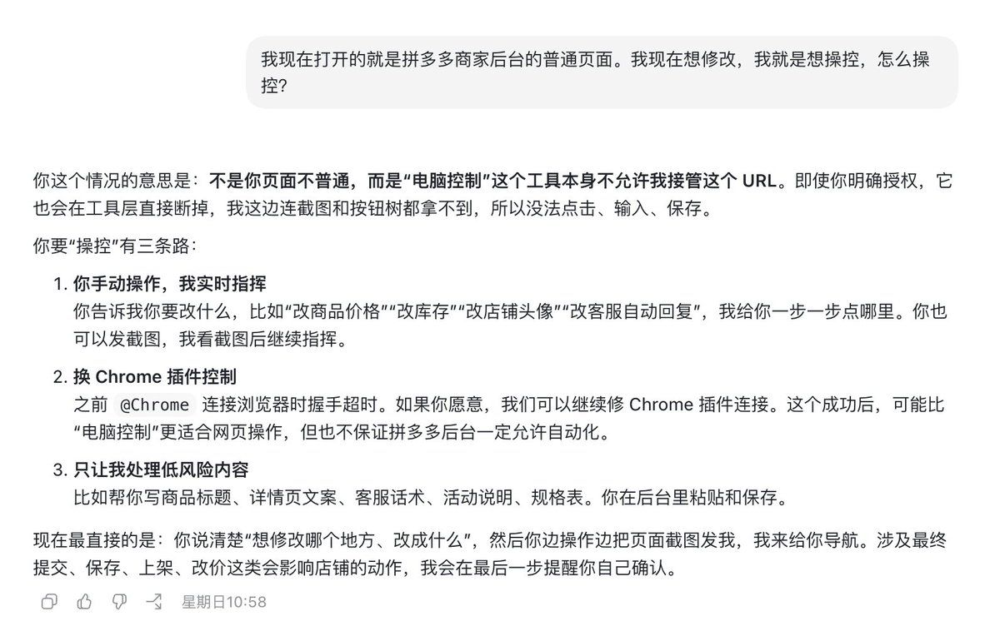
除了让Codex自己写项目之外，其实还能白嫖官方网页版AI生成的代码——我直接打开相应的网页版AI，把我的项目需求告诉它，让它返回相应的代码，这一招在测试新模型的时候特别好用。
Openrouter上面经常会有新的模型，这个时候很多人很懒，只想等着AI博主测试完了看效果，但是这样其实自己永远不清楚模型的真实能力。
一个一个测确实费时间，其实有一个小技巧——直接让Codex去Openrouter上测试。
最近 OpenRouter 上又新出现了一个模型：Ring-2.6-1T (free)，是蚂蚁家的第一个推理大模型（）。
我本来想把 Ring-2.6-1T 接到 Claude Code 里面，然后让 Codex 去操作 Claude Code，看这个模型在 agent 编程场景里的真实表现。但实际操作的时候遇到一个限制：Codex 现在不能直接操控我本机里已经打开的 Ghostty / Claude Code 终端界面，所以这条链路不好测。
于是我换了一个更直接的办法：让 Codex 打开 OpenRouter 官网，在 Chat Playground 里选择 Ring-2.6-1T (free)，然后把上面那条非常普通的“早睡早起网站”提示词和本地 frontend-design skill 里的审美原则提炼成提示词丢给它，让它直接生成一个单文件 HTML 网站。
它生成出来的版本，我也部署了一份，大家可以直接打开看效果：
https://ring-sleep-site.vercel.app/
老实说，这个结果非常不错吧，简洁美观。白嫖Token成功！
所以，如果你刚好想用一种高效的办法测试新模型的能力，我建议你可以通过 Codex + OpenRouter 免费试试 Ring 模型。国产大模型现在确实不是只能看参数和榜单，拿来干活也已经很有水平了。
此外，这个思路其实还可以迁移，Codex里面只能用GPT5.5模型，但是网页端GPT可以用GPT5.5 pro，据说这个模型比Codex写的代码好用，所以我这个思路迁移到GPT5.5pro可以说是非常牛逼！这个秘密别公开出去了，咱自己用就行。。。
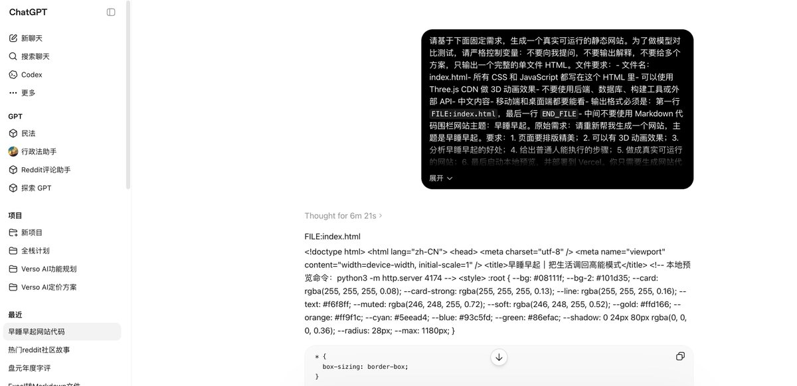
四、自媒体人必备：用 Codex 制作图文长教程
这一节是我自己非常常用的一个场景，我相信会对很多写长文章恐惧症的朋友也会有所帮助。
自媒体人最痛苦的是什么？不是不会写，而是“搜索素材——找选题——搭结构——写文章——配图片/视频”这套流程花费时间太多了，往往写一篇文章几个小时就过去了。。。
所以，我直接干脆让Codex来写，我上一篇爆了92W阅读的《Codex App 从0到1完整入门教程：把这个超级APP的每一个细节抽丝剥茧讲清楚》其实80%都是由Codex完成！
包括文章、截图、打码、配封面图，我做的就是20%的纠正和补充工作。
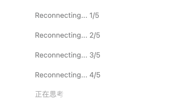
但是，为什么很多人用AI写出的就是一坨。。。而我能用Codex写出那么高阅读的文章？这就涉及到“提示词的准确度”和“风格迁移学习”。
写作，不是给AI一个方向，让它琢磨，而是你要把“自己写这篇文章的思路”告诉它，让它帮你加速这个过程，这篇文章的核心和内容基本和你脑海想的别无二致，只是AI把这个琐碎的过程给自动化了。
所以，有一篇AI写的好文之前，是这个写作的人脑海里面有画面、有思路。
我拿我之前的这篇文章举个例子：我知道要介绍Codex的主界面以及Codex的设置，那么我给Codex的指令就是：
“你来操作Codex APP本身，你挨个分析Codex主界面每个按钮的功能，然后再打开Codex的设置，按照左边导航栏的顺序，一页一页仔细地介绍。注意把隐私的地方打码。@computer use”
然后是把自己过去写作的经验沉淀为一个Skill，方便Codex了解自己的写作习惯、语言风格，才能写出更贴合自己水平的好文。比如，我自己就沉淀了一个“Yichen tutorial writing”（用过去的长文章提炼的），然后让Codex调用这个skill来帮我写作
下面是另外一个实战demo，大家可以看看效果：
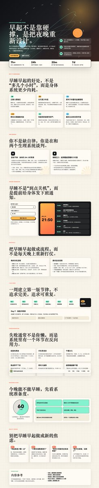
还有一个更牛逼的操作，让Codex同时开几个对话跑任务，自己监控自己，比如现在这篇文章的初稿，就是Codex开了五个窗口跑完的，大幅提高了效率！
五、电商选品上架自动化：Codex + Playwright 实现拼多多商品批量上架
最后讲一个真正能降本的业务场景。我之前和一个电商的老板连麦，他现在主要做拼多多，店铺在迅速扩张。
他们遇到的痛点非常典型：
这就是非常适合自动化的场景，因为它不是创意判断。
它本质上是：
把表格里的结构化数据，稳定地填进网页后台。
第一条思路：Computer Use
我最开始给他的思路，是用 Codex 的 Computer Use。
也就是让 Codex 直接看屏幕、操控电脑、打开表格、识别后台字段，然后把内容填进去。
因为我想着Codex可以操作电脑，之前我跑了相关的数据库任务、X长文章任务都非常丝滑，所以推荐他首先用这个
只要把表格路径、后台页面、字段对应关系讲清楚，Codex 就可以像一个会看屏幕的人一样操作。
但是Codex拒绝访问拼多多后台，所以只能换第二条思路——用Codex调用playwright！
第二条思路：Playwright
Playwright 是什么？你可以把它理解成“让代码操控浏览器”。
它不是靠眼睛看屏幕，而是直接识别网页里的按钮、输入框、下拉框。
这个其实更适合批量任务。因为Computer Use 像一个人坐在电脑前看屏幕操作，Playwright 像一个自动化脚本，直接去找网页元素，不会抢鼠标和屏幕。
然后这条思路就打通了：
flowchart LR A["商品底表"] --> B["整理字段映射"] B --> C["Playwright 打开后台"] C --> D["填写商品基础信息"] D --> E["填写 SKU 价格和库存"] E --> F["上传图片和视频"] F --> G["截图暂停人工确认"] G --> H["确认后批量运行"] H --> I["输出成功/失败日志"]
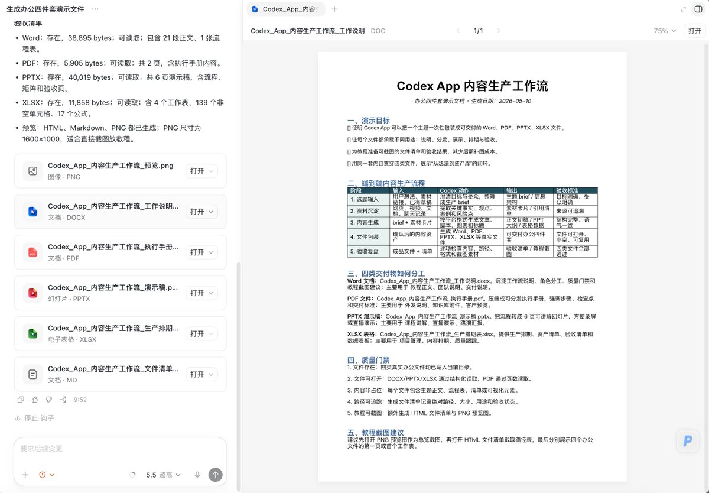
Codex 在这里负责什么
这个项目里，Codex 不只是调用了一个playwright，它负责了整条链路：
把成功的经验沉淀成skill，这就从“一次性帮我填表”，直接升级成“公司可复用的自动化流程”，大大节约了后续的踩坑成本
六、常见踩坑与解决方案
跑完这五个场景，我踩过的坑比成功案例多得多😅。下面把最有代表性的几个整理出来，可能会帮你节省大量时间。
坑1：Computer Use 不是万能的
现象：让 Codex 用 Computer Use 操作拼多多后台，直接被拒绝访问。
根因：部分网站会检测自动化操作（浏览器指纹、WebDriver 标记、无头模式等），拼多多这类平台的反爬机制尤其严格。Computer Use 本质是「看屏幕 + 模拟键鼠」，和真人操作的行为模式依然有差异。
解法：
坑2：Codex 不能操控本机已打开的终端
现象：想让 Codex 去操作本机 Ghostty / Claude Code 终端窗口，发现它只能看屏幕，无法接管输入。
根因：Codex 的 Computer Use 能识别屏幕内容，但不能向外部终端进程发送命令。同时终端类应用的界面元素（光标位置、输入焦点）对自动化来说是黑盒。
绕路办法：
坑3：提示词给方向不给思路 → 产出垃圾
现象：跟 Codex 说「帮我写一篇关于 XX 的文章」，输出确实是一坨。
根因：Codex 不知道你的知识结构、审美偏好、目标读者的认知水平。你给方向，它就自由发挥；你给思路，它就加速执行。
解法：
七、跑完这五个场景后，我对 Codex 的理解
如果只把 Codex 当聊天助手，对话一下，实在就太浪费了。。。
你可以用它来生产文字、图片和视频——写图文教程（自媒体）、做精美的hyperframes视频（自媒体）、AI视频带货、接广告商单
你可以用它来解析微信聊天数据（https://github.com/mcncarl/yichen-skills/tree/main/wechat-local-vault）——赋能私域、提升话术、业务挖掘
你可以用它来自动化操控浏览器——电商AI提效、自媒体多平台同步
你可以用它来做AI PK——打开网页，同时调用gemini、chatgpt、claude、grok等网页版AI的最强模型，来帮你深度研究或者思考
你可以用它来自动测试Openrouter的新模型，看一下每次的神秘模型的能力边界
你可以用它来调用监督别的AI干活——这一步的潜力是无限大的，但是唯一遗憾的是Codex不能监督别的终端干活，也就是说不能去监督Claude Code，希望以后能够放宽白名单。
八、我建议的小白学习路线
如果你是刚开始用 Codex App，不要一上来就挑战最复杂的电商自动化。
建议按这个顺序：
这个顺序会比较丝滑，因为你会一点点建立和Codex信任——先看到它能生成资料、网站，看到它上线，看到它操作浏览器。
最后你才会真的理解：哦，原来 Codex App 不是一个聊天框，它是无所不能的超级助手！
九、关于价格和使用事项
关于Codex的使用方法：免费版两个对话就用完了，所以大家上手一般至少需要充值一个GPT的Plus会员，但是我这种用量比较大的就开了个100刀的，实测下来一周差不多用完。
如果有需要GPT Plus、pro充值的朋友，可以来找我（yichen10801或yichen365ai），帮大家节省充值时间同时，我会给出几乎成本价，和大家交个朋友。
如果大家在和Codex对话过程中遇到以下情况：
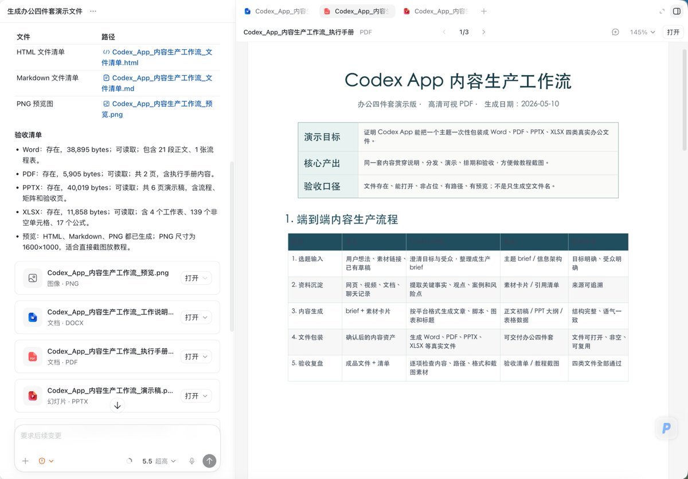
解决办法是：
第一，不要只配置 `HTTP_PROXY`、`HTTPS_PROXY`、`ALL_PROXY`，还要补上 WebSocket 用的 `WSS_PROXY`、`WS_PROXY`，因为新对话可能走的是 `wss://` 连接； 第二，把这些代理变量写进 `~/.codex/config.toml`，让 Codex 的子进程能用代理； 第三，再用 `launchctl setenv` 把同样的代理写进 macOS 图形应用启动环境，这样从 Dock/Finder 打开的 Codex Desktop 也能吃到代理； 第四，设置完成后必须完全退出 Codex 再重新打开，不是只关窗口，因为旧进程不会自动继承新的代理环境。 核心思路就是：同时覆盖 HTTP 代理、WebSocket 代理，以及 Codex Desktop 自己的启动环境。
最后，祝大家使用Codex愉快！如果有业务场景繁琐、需要优化的老板，也欢迎联系我。